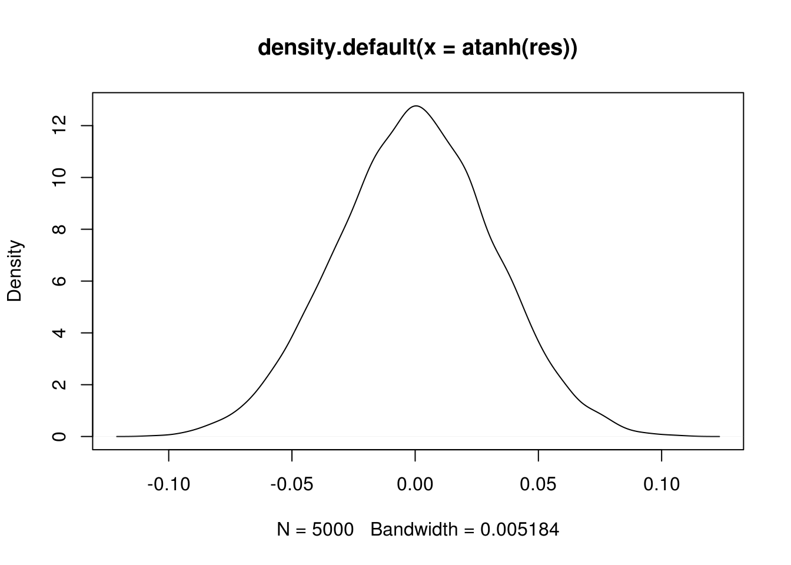
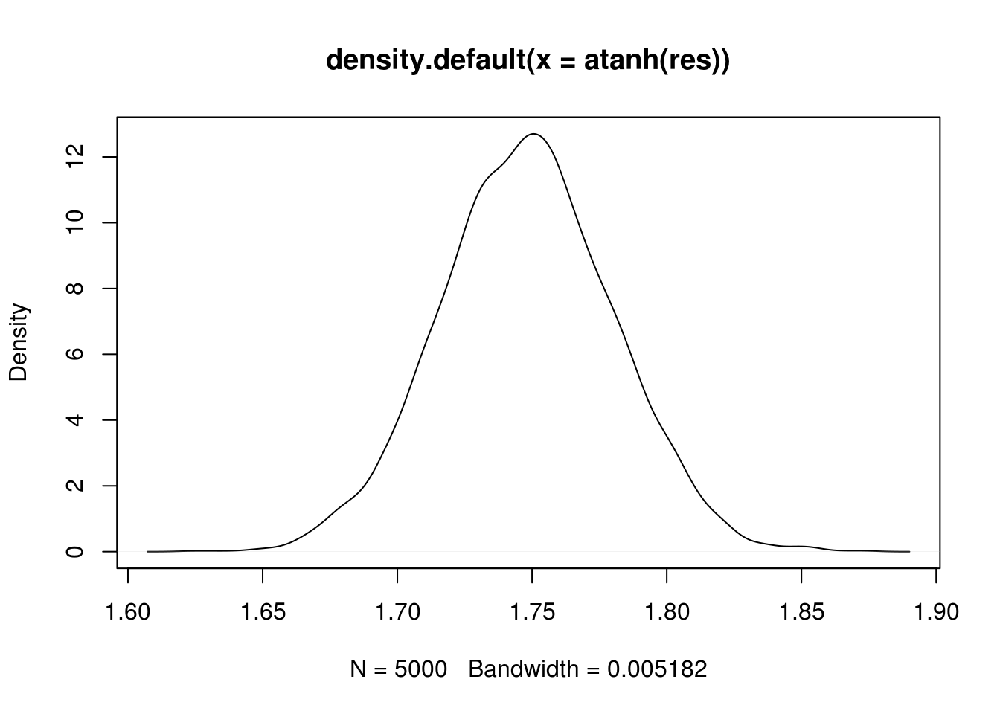

I write now as a premise to another project rooted in the construction of an empiric distribution for a novel measure of dependence. For my own sake, I set out here to evaluate Fisher’s hypothesis that the inverse hyperbolic tangent of a sample correlation coefficient, \(r\), follows a normal distribution with a population mean equal to the similarly transformed population correlation coefficient, and a sampling error equal to \(\frac{1}{\sqrt{N-3}}\).
This transformation, known as the Fisher z-transformation, makes it possible to use correlation coefficients within a conventional hypothesis testing framework by providing a way to calculate standard error using only a point estimate (i.e., the sample correlation coefficient) and the sample size. In this way, it offers an elegant means by which to effortlessly apply well-described statistical methods to correlation-based studies.
In this report, I demonstrate empirically that (1) the z-transformation of a distribution of sample correlation coefficients has a normal distribution, and (2) the standard error about that distribution approximately equals \(\frac{1}{\sqrt{N-3}}\). Although not discussed further, do take note that Fisher’s hypothesis presupposes that the two correlated variables are independent and follow a bivariate normal distribution.
We begin by calculating the correlation between two randomly distributed \(N\)-sized vectors, \(X\) and \(Y\).
N <- 1000
X <- rnorm(N)
Y <- rnorm(N)
cor(X, Y)## [1] 0.0106989Yet, a single correlation coefficient is not sufficient to put Fisher’s z-transformation to the test. Instead, we must establish a distribution of correlation coefficients. For this, we replicate the above code chunk an arbitrarily large number of times to build a sample set of correlation coefficients between 5000 pairs of \(N\)-sized vectors.
N <- 1000
res <- sapply(rep(N, 5000), function(N) cor(rnorm(N), rnorm(N)))To apply Fisher’s z-transformation, we simply calculate \(atanh(r)\) for this sample set of correlation coefficients, yielding a normal distribution of sample statistics. The Shapiro-Wilk normality test confirms that these z-transformed data follow a normal distribution.
plot(density(atanh(res)))
shapiro.test(atanh(res))##
## Shapiro-Wilk normality test
##
## data: atanh(res)
## W = 0.99969, p-value = 0.6889Finally, since the standard error of a statistic is defined as the standard deviation of the sampling distribution of that statistic, we would expect that the standard deviation of these z-transformed data approximately equals \(\frac{1}{\sqrt{N-3}}\). In other words, the empiric standard error should approximate the predicted standard error.
sd(atanh(res))## [1] 0.031637431/(sqrt(N-3))## [1] 0.03167032Everything checks out so far, but does Fisher’s z-transformation rule hold true for all \(N\)-sized vectors? To test this, we embed the code that calculates correlation between 5000 pairs of \(N\)-sized vectors within a loop that iterates across several values of \(N\).
N.all <- seq(from = 100, to = 1000, by = 100)
distrs <-
lapply(N.all,
function(N){
sapply(rep(N, 5000), function(N) cor(rnorm(N), rnorm(N)))
})Using this result, we can calculate both the empiric standard error and the predicted standard error for all \(N\).
sd.empiric <- sapply(distrs, function(d) sd(atanh(d)))
sd.predict <- sapply(N.all, function(N) 1/(sqrt(N-3)))Finally, we compare these quantitatively by calculating the mean of the percent difference between them.
mean(abs(sd.empiric - sd.predict)/sd.predict*100)## [1] 0.9554196Now, all that is left to do is convince myself that the approximate equality between the empiric standard error and the predicted standard error is not just an artifact of the distribution of the random variables \(X\) and \(Y\). To do this, we apply the pipeline established above to two positively correlated random variables. First, however, we need to define a function that creates the two positively correlated random variables, \(X\) and \(Y\), containing \(N\) elements each, and then calculates the correlation between them.
newCor <- function(N){
v <- rnorm(N, mean = 10)
X <- v + rnorm(N, sd = 0.25)
Y <- v + rnorm(N, sd = 0.25)
cor(X, Y)
}Using this formula, we now have a tidy way of generating a distribution of positive correlation coefficients.
N <- 1000
res <- sapply(rep(N, 5000), newCor)Again, the Shapiro-Wilk normality test confirms that the z-transformed data follow a normal distribution.
plot(density(atanh(res)))
shapiro.test(atanh(res))##
## Shapiro-Wilk normality test
##
## data: atanh(res)
## W = 0.99961, p-value = 0.4322Next, we generate a distribution of positive correlations between two \(N\)-sized random variables across a range of \(N\).
N.all <- seq(100, 1000, 100)
distrs <-
lapply(N.all,
function(N){
sapply(rep(N, 5000), newCor)
})As above, we compare the empiric standard error with the predicted standard error…
sd.empiric <- sapply(distrs, function(d) sd(atanh(d)))
sd.predict <- sapply(N.all, function(N) 1/(sqrt(N-3)))
mean(abs(sd.empiric - sd.predict)/sd.predict*100)## [1] 0.8095219…and breathe a sigh of relief.
© 2018 | thom@tpq.me | Twitter | GitHub